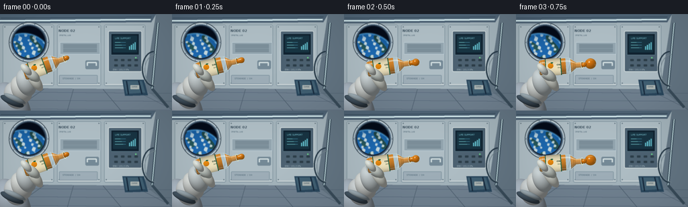
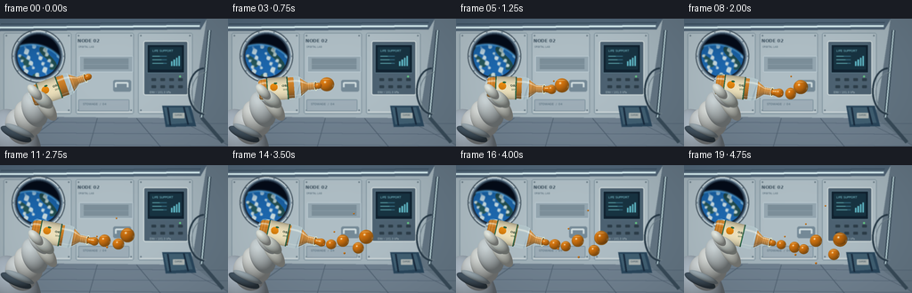

CODING AGENTS AS PIXEL WORLD MODELS
traex/GPT-6.1-Sol · phygen_003
点击播放 · 原生 RGB 像素
逐轮保存的候选
回放视频、检查图与代码变化。
每份候选均可单独播放。实际图片检查记录在下方工具轨迹中。
候选 01播放与检查图
点击播放 · 原生 RGB 像素


展开代码变化
--- 上一保存版本
+++ 本次保存版本
@@ -0,0 +1,342 @@
+from pathlib import Path
+import math
+import numpy as np
+from PIL import Image, ImageDraw, ImageFont, ImageFilter
+import artifact_io
+
+ROOT=Path(__file__).resolve().parent
+W,H,S=256,144,3
+WW,HH=W*S,H*S
+rng=np.random.default_rng(8)
+
+def font(size,bold=False):
+ path='/usr/share/fonts/truetype/dejavu/DejaVuSans'+('-Bold' if bold else '')+'.ttf'
+ try:return ImageFont.truetype(path,round(size*S))
+ except:return ImageFont.load_default()
+
+def rect(d,box,fill,outline=None,width=1,r=0):
+ b=tuple(round(q*S) for q in box)
+ if r:d.rounded_rectangle(b,radius=round(r*S),fill=fill,outline=outline,width=max(1,round(width*S)))
+ else:d.rectangle(b,fill=fill,outline=outline,width=max(1,round(width*S)))
+def line(d,pts,fill,width=1):d.line([(int(x*S),int(y*S)) for x,y in pts],fill=fill,width=max(1,round(width*S)))
+def poly(d,pts,fill):d.polygon([(int(x*S),int(y*S)) for x,y in pts],fill=fill)
+def ellipse(d,b,fill,outline=None,width=1):d.ellipse(tuple(round(q*S) for q in b),fill=fill,outline=outline,width=max(1,round(width*S)))
+def text(d,xy,s,fill,size=4,bold=False):d.text((int(xy[0]*S),int(xy[1]*S)),s,font=font(size,bold),fill=fill)
+Y,X=np.mgrid[0:HH,0:WW].astype(float);X=(X+.5)/S;Y=(Y+.5)/S
+
+def background():
+ im=Image.new('RGB',(WW,HH)); a=np.zeros((HH,WW,3),float)
+ lum=1-.13*(X/256)-.16*(Y/144)
+ for k,c in enumerate([173,186,193]):a[:,:,k]=c*lum
+ im=Image.fromarray(np.uint8(a));d=ImageDraw.Draw(im)
+ # Station bulkhead, perspective sidewall and flooring.
+ poly(d,[(0,0),(232,0),(215,112),(0,110)],(164,180,188))
+ poly(d,[(232,0),(256,0),(256,144),(215,112)],(100,118,132))
+ poly(d,[(0,110),(215,112),(256,144),(0,144)],(112,129,144))
+ poly(d,[(0,0),(232,0),(225,12),(0,14)],(80,101,119))
+ for xa,xb in [(4,80),(85,150),(155,216)]:
+ rect(d,(xa,16,xb,107),(175,190,197),(116,137,150),.7,r=2)
+ line(d,[(xa+2,105),(xb-2,105)],(211,219,220),1)
+ for xx in [xa+3,xb-3]:
+ for yy in [19,103]:
+ ellipse(d,(xx-.65,yy-.65,xx+.65,yy+.65),(80,100,112))
+ line(d,[(xx-.3,yy),(xx+.3,yy)],(189,203,210),.3)
+ for yp in [116,128,141]:line(d,[(0,yp),(256,yp+2)],(66,85,104),.8)
+ for xp in [20,100,180,260]:line(d,[(120+(xp-120)*.55,112),(xp,144)],(71,88,104),.8)
+ # Strip lamps and rails.
+ line(d,[(0,10),(224,8)],(224,247,250),2.3)
+ line(d,[(1,6),(225,4)],(44,64,80),1)
+ line(d,[(235,13),(226,111),(250,139)],(57,76,90),4)
+ line(d,[(235,13),(226,111)],(203,228,232),1.2)
+ # Porthole: dark space, blue planet, machined aluminum flange.
+ cx,cy,r=43,42,28
+ for rr,col in [(30,(71,88,100)),(28.8,(213,225,229)),(27.5,(130,153,170)),(26,(50,70,89)),(24.5,(18,30,47))]:
+ ellipse(d,(cx-rr,cy-rr,cx+rr,cy+rr),col)
+ mask=(X-cx)**2+(Y-cy)**2<23.7**2
+ win=np.zeros((HH,WW,3),float);win[:]=[4,11,24]
+ # Curved Earth horizon visible through the window.
+ ex,ey,er=35,72,43
+ rad=np.sqrt((X-ex)**2+(Y-ey)**2)
+ em=rad<er
+ z=np.sqrt(np.clip(1-(rad/er)**2,0,1))
+ clouds=(np.sin(.30*X+.11*Y+np.sin(.20*Y)*1.6)+np.sin(.57*X-.25*Y)+.5*np.cos(.83*Y+.43*X))
+ continent=(np.sin(.19*X+.085*Y+np.cos(.18*Y)*2)+.66*np.cos(.15*Y-.24*X))>1.12
+ light=np.clip(.5+.5*z,0,1)
+ earth=np.stack([12+18*light,65+42*light,112+68*light],axis=-1)
+ earth[continent]=np.array([41,95,99])*light[continent,None]
+ cl=np.clip((clouds-.5)*1.3,0,.9)*np.clip(z+.3,0,1)
+ earth=earth*(1-cl[:,:,None])+np.array([217,231,230])*cl[:,:,None]
+ atm=np.exp(-((rad-er)/1.25)**2)
+ win[em]=earth[em]
+ win=win*(1-atm[:,:,None]*.6)+np.array([91,179,239])*atm[:,:,None]*.6
+ arr=np.array(im).astype(float);arr[mask]=win[mask];im=Image.fromarray(np.uint8(np.clip(arr,0,255)));d=ImageDraw.Draw(im)
+ for k in range(10):
+ aa=2*math.pi*k/10;xx=cx+28.3*math.cos(aa);yy=cy+28.3*math.sin(aa)
+ ellipse(d,(xx-.7,yy-.7,xx+.7,yy+.7),(72,95,113))
+ ellipse(d,(xx-.24,yy-.4,xx+.23,yy),(229,236,236))
+ # Rear equipment and monitor.
+ rect(d,(161,25,211,86),(77,98,114),(214,224,224),1,r=2)
+ rect(d,(165,29,207,61),(17,34,48),(98,130,145),.8,r=1)
+ rect(d,(168,32,204,57),(24,52,66),r=1)
+ text(d,(171,34),'LIFE SUPPORT',(131,206,220),3.3)
+ for j in range(3):
+ line(d,[(171,42+j*4),(187,42+j*4)],(70,139,164),.7)
+ line(d,[(171,42+j*4),(179+j*2,42+j*4)],(123,212,218),.7)
+ for j in range(4):rect(d,(192+j*2.8,48-j*2,193.4+j*2.8,53),(100,193,207))
+ for y in [67,75]:
+ for x in [170,180,190,200]:rect(d,(x,y,x+5,y+3),(45,62,73),r=.5)
+ ellipse(d,(201,64,203,66),(107,215,134))
+ text(d,(168,81),'ENV / 101.3 kPa',(172,192,200),2.9)
+ text(d,(87,22),'NODE 02',(58,78,92),5,bold=True)
+ text(d,(88,30),'ORBITAL LAB',(83,106,120),2.7)
+ rect(d,(89,42,149,60),(148,166,176),(195,211,218),.6,r=1)
+ for j in range(9):line(d,[(94,45+j*1.4),(144,45+j*1.4)],(100,119,131),.5)
+ # Latches and handle, not floating props.
+ rect(d,(127,69,147,82),(117,138,151),r=2)
+ line(d,[(130,77),(130,72),(143,72),(143,77)],(208,220,222),2)
+ rect(d,(88,91,145,104),(158,174,184),(115,137,150),.6,r=1)
+ text(d,(93,94),'STOWAGE / 04',(78,102,117),3.3)
+ # Fabric equipment bags on lower right.
+ poly(d,[(182,98),(214,98),(220,121),(186,122)],(42,71,93))
+ poly(d,[(184,100),(211,100),(216,117),(188,119)],(65,96,115))
+ line(d,[(188,100),(191,120)],(24,44,63),2)
+ line(d,[(206,99),(211,119)],(24,44,63),2)
+ rect(d,(194,106,207,112),(174,183,181),r=.5)
+ text(d,(196,107),'CARGO',(55,77,90),2.3)
+ # Cable loops to reinforce enclosed technical habitat.
+ d.arc(tuple(int(v*S) for v in (211,55,247,108)),90,269,fill=(39,58,72),width=2*S)
+ d.arc(tuple(int(v*S) for v in (215,60,248,107)),90,269,fill=(112,130,139),width=S)
+ return np.array(im.filter(ImageFilter.GaussianBlur(.38*S))).astype(float)
+
+BG=background()
+
+def over(im,col,alpha):
+ if np.isscalar(alpha):alpha=np.full((HH,WW),alpha)
+ a=np.clip(alpha,0,1)[...,None]
+ im[:]=im*(1-a)+np.asarray(col)*a
+
+def ellipsoid(im,cx,cy,rx,ry,col,ang=0,gloss=0.0):
+ dx=X-cx;dy=Y-cy;c=math.cos(ang);s=math.sin(ang)
+ u=(c*dx+s*dy)/rx;v=(-s*dx+c*dy)/ry
+ q=u*u+v*v;mask=q<1
+ z=np.sqrt(np.clip(1-q,0,1));nx=u*c-v*s;ny=u*s+v*c
+ diffuse=np.clip((-.42*nx-.55*ny+.72*z),0,1)
+ shade=.5+.5*diffuse
+ color=np.array(col)[None,None,:]*shade[:,:,None]
+ spec=np.maximum(0,-.25*nx-.37*ny+.895*z)**35*gloss
+ color=color+spec[:,:,None]*np.array([110,114,118])
+ edge=np.clip((1-q)*S*min(rx,ry),0,1)*mask
+ over(im,color,edge)
+
+def glove_back(im,t):
+ # A padded spacesuit glove attached to an off-camera forearm.
+ ellipsoid(im,18,139,25,40,(177,190,202),ang=-.48,gloss=.10)
+ ellipsoid(im,24,121,18,21,(211,217,218),ang=-.35,gloss=.15)
+ ellipsoid(im,32,112,15,21,(219,223,220),ang=-.42,gloss=.1)
+ # Dark wrist seal and articulated palm.
+ ellipsoid(im,18,130,19,6,(71,88,102),ang=.42)
+ ellipsoid(im,22,126,18,4,(161,176,184),ang=.42)
+ ellipsoid(im,39,102,14,21,(205,214,216),ang=-.37,gloss=.05)
+ ellipsoid(im,51,98,8,20,(230,233,224),ang=-.60,gloss=.10)
+ ellipsoid(im,43,88,7,15,(215,223,223),ang=-.7,gloss=.1)
+
+# Bottle axis u points toward opening, v transverse to axis.
+def bottle_pose(t):
+ ang=-.34+.59*(1-math.exp(-t/1.25))
+ center=(61+1.3*math.sin(t*.7),79-1.3*math.sin(t*.55))
+ return center,ang
+
+def bottle(im,t):
+ (cx,cy),ang=bottle_pose(t);c=math.cos(ang);s=math.sin(ang)
+ u=(X-cx)*c+(Y-cy)*s;v=-(X-cx)*s+(Y-cy)*c
+ # Sculpted PET bottle, rounded base and gently sloping shoulders.
+ knots=np.array([-30,-29,-26,-21,15,19,23,28,35,37])
+ radii=np.array([0,7,12,13,13,12,9,5.2,5.2,5.4])
+ rad=np.interp(u,knots,radii,left=0,right=0)
+ inb=(u>=-30)&(u<=37)&(abs(v)<rad)
+ vn=v/np.maximum(rad,.1);z=np.sqrt(np.clip(1-vn*vn,0,1))
+ aa=np.clip((rad-abs(v))*S,0,1)*inb
+ # Transmission of background through transparent shell.
+ ix=np.clip((X*S+vn*4*S).astype(int),0,WW-1)
+ iy=np.clip((Y*S+z*1.6*S).astype(int),0,HH-1)
+ base=im[iy,ix].copy()*.77+np.array([186,213,215])*.23
+ # Juice inside reservoir. No gravity-driven fall: reservoir shrinks toward held base.
+ fill_limit=14-1.85*t
+ juice=(u<fill_limit)&(u>-27)&(abs(v)<rad-1.3)
+ nd=.45+.55*np.clip(.68*z-.55*vn,0,1)
+ jcol=np.array([237,132,16])*nd[:,:,None]
+ jcol=jcol*.86+base*.14
+ base[juice]=jcol[juice]
+ # Liquid reaches the neck while the container is squeezed/tilted.
+ neckjuice=(u>20)&(u<36)&(abs(v)<rad-1.2)
+ base[neckjuice]=.87*jcol[neckjuice]+.13*base[neckjuice]
+ fres=(1-z)**3
+ base=base*(1-.60*fres[:,:,None])+np.array([200,223,225])*.60*fres[:,:,None]
+ # Long soft box reflection and narrow white specular streaks on curved plastic.
+ stripe=np.exp(-((vn+.57)/.085)**2)*.57
+ stripe2=np.exp(-((vn-.70)/.046)**2)*.23
+ reflection=np.clip(stripe+stripe2,0,.85)
+ base=base*(1-reflection[:,:,None])+np.array([246,251,240])*reflection[:,:,None]
+ # Embossed bottom and shoulder ridges.
+ bands=sum(np.exp(-((u-p)/.44)**2) for p in [-25,-22,19,22,29,31,33,35])
+ base+=bands[:,:,None]*(10+18*z[:,:,None])
+ over(im,np.clip(base,0,255),aa)
+ # Wraparound printed label follows cylinder curvature.
+ label=(u>-18)&(u<6)&(abs(v)<rad-.15)
+ lc=np.array([239,228,191])[None,None,:]*(.56+.44*z[:,:,None])
+ border=(u<-16.8)|(u>4.6)
+ lc=np.broadcast_to(lc,(HH,WW,3)).copy()
+ lc[border]=np.array([51,115,82])*(.55+.45*z[border,None])
+ over(im,lc,aa*label)
+ # Orange icon on the front face, positioned in body coordinates.
+ locu=u+10;locv=v+2
+ orange=(locu**2+(locv*1.05)**2<4.3**2)&label
+ shade=np.clip(.7+.22*z-.10*locv/4.3,.4,1)
+ over(im,np.array([246,147,19])*shade[:,:,None],orange)
+ leaf=((locu-2.1)**2/4+(locv+4.2)**2/1.0<1)&label
+ over(im,(38,101,66),leaf)
+ # Text stamp rendered flat locally, then geometrically mapped around bottle.
+ stamp=Image.new('RGBA',(75*S,28*S),(0,0,0,0));dd=ImageDraw.Draw(stamp)
+ dd.text((29*S,9*S),'ORANGE',font=font(3.5,True),fill=(47,70,52,255))
+ dd.text((30*S,14*S),'100% JUICE',font=font(2.2),fill=(67,91,63,255))
+ # Stamp u horizontal, v vertical, origin (-30,-14).
+ si=np.asarray(stamp);sx=np.clip(((u+30)*S).astype(int),0,75*S-1);sy=np.clip(((v+14)*S).astype(int),0,28*S-1)
+ sampled=si[sy,sx];al=sampled[:,:,3]/255*label
+ over(im,sampled[:,:,:3]*(.7+.3*z[:,:,None]),al)
+ # Open neck and rolled threaded mouth: ellipse projected along short cylinder axis.
+ mx=cx+37*c;my=cy+37*s
+ du=(X-mx)*c+(Y-my)*s;dv=-(X-mx)*s+(Y-my)*c
+ rimq=(du/2.1)**2+(dv/5.55)**2
+ rim=(rimq<1)&(rimq>.50)
+ over(im,(222,232,208),rim.astype(float)*.95)
+ inner=(du/1.5)**2+(dv/4.3)**2<1
+ over(im,(112,77,22),inner.astype(float)*.85)
+ return mx,my,c,s
+
+def glove_front(im,t):
+ # Thumb and curled fingers cross the near side of the bottle at the base.
+ (cx,cy),a=bottle_pose(t)
+ ellipsoid(im,cx-13,cy+12,7.2,14,(215,222,215),ang=-.87,gloss=.12)
+ ellipsoid(im,cx-22,cy+4,5.5,11,(226,231,224),ang=-.74,gloss=.09)
+ # Glove seam stitching; very subdued.
+ d_im=Image.fromarray(np.uint8(np.clip(im,0,255)));d=ImageDraw.Draw(d_im)
+ line(d,[(cx-19,cy+15),(cx-14,cy+16),(cx-9,cy+14)],(146,165,166),.45)
+ line(d,[(cx-28,cy+5),(cx-24,cy+7),(cx-20,cy+6)],(161,178,177),.4)
+ im[:]=np.asarray(d_im)
+
+LIGHT=np.array([-.44,-.56,.704]);LIGHT/=np.linalg.norm(LIGHT)
+HALF=np.array([-.24,-.31,.92]);HALF/=np.linalg.norm(HALF)
+
+def liquid_shader(im,nx,ny,nz,alpha,thickness):
+ nd=np.clip(nx*LIGHT[0]+ny*LIGHT[1]+nz*LIGHT[2],0,1)
+ fres=(1-nz)**3
+ # Orange juice scatters light in its body; fresnel reflects the cabin.
+ base=np.array([235,122,12])[None,None,:]*(.53+.47*nd[:,:,None])
+ ix=np.clip((X*S-nx*thickness*1.1*S).astype(int),0,WW-1)
+ iy=np.clip((Y*S-ny*thickness*1.1*S).astype(int),0,HH-1)
+ refr=im[iy,ix]*np.array([1.0,.66,.19])
+ trans=.18+.18*(1-nz)
+ base=base*(1-trans[:,:,None])+refr*trans[:,:,None]
+ reflected=np.array([170,206,219])[None,None,:]*(.52+.48*np.clip(-ny,0,1)[:,:,None])
+ base=base*(1-.48*fres[:,:,None])+reflected*.48*fres[:,:,None]
+ sp=np.clip(nx*HALF[0]+ny*HALF[1]+nz*HALF[2],0,1)**95
+ base=base*(1-sp[:,:,None]*.9)+np.array([255,252,221])*sp[:,:,None]*.9
+ # Long bright reflection of station ceiling rail.
+ strip=np.exp(-((ny+.69)/.055)**2)*np.exp(-((nx+.12)/.54)**4)*.43
+ base=base*(1-strip[:,:,None])+np.array([255,237,176])*strip[:,:,None]
+ side=np.clip(nx*.83+ny*.20+nz*.51,0,1)**65*.38
+ base=base*(1-side[:,:,None])+np.array([191,220,228])*side[:,:,None]
+ over(im,np.clip(base,0,255),alpha)
+
+def drop(im,cx,cy,r,t,phase=0):
+ wob=.055*math.sin(t*5.1+phase)*math.exp(-max(t,0)*.7)
+ rx=r*(1+wob);ry=r/(1+wob)
+ dx=(X-cx)/rx;dy=(Y-cy)/ry;q=dx*dx+dy*dy
+ nz=np.sqrt(np.clip(1-q,0,1));nx=dx;ny=dy
+ alpha=np.clip((1-q)*r*S/1.1,0,1)*(q<1)
+ liquid_shader(im,nx,ny,nz,alpha,r*nz)
+
+def connected_liquid(im,centers):
+ # Smooth implicit surfaces model capillary bridge, not a falling stream.
+ # A compact Gaussian field creates a naturally rounded joined globule.
+ minx=max(0,int((min(p[0]-p[2]*1.7 for p in centers))*S));maxx=min(WW,int((max(p[0]+p[2]*1.7 for p in centers)+1)*S))
+ miny=max(0,int((min(p[1]-p[2]*1.7 for p in centers))*S));maxy=min(HH,int((max(p[1]+p[2]*1.7 for p in centers)+1)*S))
+ if minx>=maxx or miny>=maxy:return
+ xx=X[miny:maxy,minx:maxx];yy=Y[miny:maxy,minx:maxx]
+ coeff=[];k=math.log(2)
+ for cx,cy,r in centers:coeff.append((cx,cy,r,2*np.exp(-k*((xx-cx)**2+(yy-cy)**2)/r**2)))
+ f0=sum(p[3] for p in coeff);inside=f0>1
+ lo=np.zeros_like(xx);hi=np.full_like(xx,max(p[2] for p in centers)*2)
+ for _ in range(15):
+ zz=(lo+hi)*.5
+ ff=sum(g*np.exp(-k*zz*zz/(r*r)) for cx,cy,r,g in coeff)
+ lo=np.where(ff>1,zz,lo);hi=np.where(ff>1,hi,zz)
+ z=(lo+hi)/2
+ gx=np.zeros_like(xx);gy=np.zeros_like(xx);gz=np.zeros_like(xx)
+ for cx,cy,r,g in coeff:
+ f=g*np.exp(-k*z*z/r**2)/(r*r)
+ gx+=(xx-cx)*f;gy+=(yy-cy)*f;gz+=z*f
+ norm=np.sqrt(gx*gx+gy*gy+gz*gz)+1e-8
+ nx=np.zeros((HH,WW));ny=nx.copy();nz=nx.copy();alpha=nx.copy();thick=nx.copy()
+ box=np.s_[miny:maxy,minx:maxx]
+ nx[box]=gx/norm;ny[box]=gy/norm;nz[box]=gz/norm
+ alpha[box]=np.clip((f0-1)*S*2.7,0,1)*inside
+ thick[box]=z
+ liquid_shader(im,nx,ny,nz,alpha,thick)
+
+# Discrete detachment events. Each particle keeps its velocity in weightlessness.
+events=[.65,1.45,2.25,3.05,3.85,4.65]
+
+frames=[]
+for frame in range(20):
+ t=frame/4
+ im=BG.copy()
+ glove_back(im,t)
+ mx,my,c,s=bottle(im,t)
+ glove_front(im,t)
+ # Larger leading globule followed by progressively smaller free-floating beads.
+ detached=[]
+ for j,birth in enumerate(events):
+ age=t-birth
+ if age<0:continue
+ (bcx,bcy),ba=bottle_pose(birth);cc=math.cos(ba);ss=math.sin(ba)
+ startx=bcx+37*cc;starty=bcy+37*ss
+ rr=[8.2,6.5,7.0,5.8,6.2,5.4][j]
+ vx=16.1+1.6*math.sin(j*1.8)
+ vy=3.1+3.2*math.sin(j*2.3-.2)
+ # Initial release is aligned with the aperture; no downward acceleration.
+ xx=startx+11*cc+vx*age;yy=starty+11*ss+vy*age
+ detached.append((xx,yy,rr,age,j))
+ for xx,yy,rr,age,j in detached:
+ drop(im,xx,yy,rr,age,j*1.7)
+ # Liquid squeezes slowly through neck, forms a bridge and pinches off.
+ prev=max([b for b in events if b<=t],default=-.15)
+ nxt=min([b for b in events if b>t],default=5.45)
+ elapsed=t-prev;period=nxt-prev
+ progress=np.clip(elapsed/period,0,1)
+ grow=2.2+4.3*(progress**.9)
+ length=3+7.3*progress
+ tipx=mx+c*length;tipy=my+s*length
+ centers=[(mx+c*1,my+s*1,2.4),(mx+c*3.2,my+s*3.2,1.6),(tipx,tipy,grow)]
+ if length>6:centers.append((mx+c*6,my+s*6,1.35))
+ connected_liquid(im,centers)
+ # A few very small satellites produced only at pinch-off, also inertial.
+ for j,birth in enumerate(events[:-1]):
+ age=t-birth
+ if age<.28:continue
+ (bx,by),ba=bottle_pose(birth)
+ px=bx+40*math.cos(ba)+14*age
+ py=by+40*math.sin(ba)+(9 if j%2 else -7)*age
+ drop(im,px,py,1.05+.25*(j%2),age,j)
+ # Subtle lens glow and filmic tone, applied equally to every frame.
+ out=Image.fromarray(np.uint8(np.clip(im,0,255)))
+ ar=np.asarray(out).astype(float)
+ bloom=np.asarray(out.filter(ImageFilter.GaussianBlur(2.2*S))).astype(float)
+ ar+=np.maximum(bloom-205,0)*.09
+ vign=1-.10*(((X-127)/164)**2+((Y-68)/119)**2)
+ ar*=vign[:,:,None]
+ out=Image.fromarray(np.uint8(np.clip(ar,0,255))).resize((W,H),Image.Resampling.LANCZOS)
+ frames.append(np.asarray(out))
+frames=np.stack(frames).astype(np.uint8)
+artifact_io.save(frames,ROOT)
+print('Saved',frames.shape,'RGB frames at 4 fps')
可观测工具轨迹
实际执行的命令与返回图片。
命令 1exit 0
/bin/bash -lc "ls -la && cat prompt.txt && printf '\\n---RULES---\\n' && cat GENERATION_RULES.md && printf '\\n---SPEC---\\n' && cat task_spec.json"
命令 2exit 0
/bin/bash -lc "cat artifact_io.py && python - <<'PY'
import numpy,PIL
print('numpy/PIL ready')
PY"命令 3exit 0
/bin/bash -lc "cat > generate.py <<'PY'
from pathlib import Path
import math
import numpy as np
from PIL import Image, ImageDraw, ImageFont, ImageFilter
import artifact_io
ROOT=Path(__file__).resolve().parent
W,H,S=256,144,3
WW,HH=W*S,H*S
rng=np.random.default_rng(8)
def font(size,bold=False):
path='/usr/share/fonts/truetype/dejavu/DejaVuSans'+('-Bold' if bold else '')+'.ttf'
try:return ImageFont.truetype(path,round(size*S))
except:return ImageFont.load_default()
def rect(d,box,fill,outline=None,width=1,r=0):
b=tuple(round(q*S) for q in box)
if r:d.rounded_rectangle(b,radius=round(r*S),fill=fill,outline=outline,width=max(1,round(width*S)))
else:d.rectangle(b,fill=fill,outline=outline,width=max(1,round(width*S)))
def line(d,pts,fill,width=1):d.line([(int(x*S),int(y*S)) for x,y in pts],fill=fill,width=max(1,round(width*S)))
def poly(d,pts,fill):d.polygon([(int(x*S),int(y*S)) for x,y in pts],fill=fill)
def ellipse(d,b,fill,outline=None,width=1):d.ellipse(tuple(round(q*S) for q in b),fill=fill,outline=outline,width=max(1,round(width*S)))
def text(d,xy,s,fill,size=4,bold=False):d.text((int(xy[0]*S),int(xy[1]*S)),s,font=font(size,bold),fill=fill)
Y,X=np.mgrid[0:HH,0:WW].astype(float);X=(X+.5)/S;Y=(Y+.5)/S
def background():
im=Image.new('RGB',(WW,HH)); a=np.zeros((HH,WW,3),float)
lum=1-.13*(X/256)-.16*(Y/144)
for k,c in enumerate([173,186,193]):a[:,:,k]=c*lum
im=Image.fromarray(np.uint8(a));d=ImageDraw.Draw(im)
# Station bulkhead, perspective sidewall and flooring.
poly(d,[(0,0),(232,0),(215,112),(0,110)],(164,180,188))
poly(d,[(232,0),(256,0),(256,144),(215,112)],(100,118,132))
poly(d,[(0,110),(215,112),(256,144),(0,144)],(112,129,144))
poly(d,[(0,0),(232,0),(225,12),(0,14)],(80,101,119))
for xa,xb in [(4,80),(85,150),(155,216)]:
rect(d,(xa,16,xb,107),(175,190,197),(116,137,150),.7,r=2)
line(d,[(xa+2,105),(xb-2,105)],(211,219,220),1)
for xx in [xa+3,xb-3]:
for yy in [19,103]:
ellipse(d,(xx-.65,yy-.65,xx+.65,yy+.65),(80,100,112))
line(d,[(xx-.3,yy),(xx+.3,yy)],(189,203,210),.3)
for yp in [116,128,141]:line(d,[(0,yp),(256,yp+2)],(66,85,104),.8)
for xp in [20,100,180,260]:line(d,[(120+(xp-120)*.55,112),(xp,144)],(71,88,104),.8)
# Strip lamps and rails.
line(d,[(0,10),(224,8)],(224,247,250),2.3)
line(d,[(1,6),(225,4)],(44,64,80),1)
line(d,[(235,13),(226,111),(250,139)],(57,76,90),4)
line(d,[(235,13),(226,111)],(203,228,232),1.2)
# Porthole: dark space, blue planet, machined aluminum flange.
cx,cy,r=43,42,28
for rr,col in [(30,(71,88,100)),(28.8,(213,225,229)),(27.5,(130,153,170)),(26,(50,70,89)),(24.5,(18,30,47))]:
ellipse(d,(cx-rr,cy-rr,cx+rr,cy+rr),col)
mask=(X-cx)**2+(Y-cy)**2<23.7**2
win=np.zeros((HH,WW,3),float);win[:]=[4,11,24]
# Curved Earth horizon visible through the window.
ex,ey,er=35,72,43
rad=np.sqrt((X-ex)**2+(Y-ey)**2)
em=rad<er
z=np.sqrt(np.clip(1-(rad/er)**2,0,1))
clouds=(np.sin(.30*X+.11*Y+np.sin(.20*Y)*1.6)+np.sin(.57*X-.25*Y)+.5*np.cos(.83*Y+.43*X))
continent=(np.sin(.19*X+.085*Y+np.cos(.18*Y)*2)+.66*np.cos(.15*Y-.24*X))>1.12
light=np.clip(.5+.5*z,0,1)
earth=np.stack([12+18*light,65+42*light,112+68*light],axis=-1)
earth[continent]=np.array([41,95,99])*light[continent,None]
cl=np.clip((clouds-.5)*1.3,0,.9)*np.clip(z+.3,0,1)
earth=earth*(1-cl[:,:,None])+np.array([217,231,230])*cl[:,:,None]
atm=np.exp(-((rad-er)/1.25)**2)
win[em]=earth[em]
win=win*(1-atm[:,:,None]*.6)+np.array([91,179,239])*atm[:,:,None]*.6
arr=np.array(im).astype(float);arr[mask]=win[mask];im=Image.fromarray(np.uint8(np.clip(arr,0,255)));d=ImageDraw.Draw(im)
for k in range(10):
aa=2*math.pi*k/10;xx=cx+28.3*math.cos(aa);yy=cy+28.3*math.sin(aa)
ellipse(d,(xx-.7,yy-.7,xx+.7,yy+.7),(72,95,113))
ellipse(d,(xx-.24,yy-.4,xx+.23,yy),(229,236,236))
# Rear equipment and monitor.
rect(d,(161,25,211,86),(77,98,114),(214,224,224),1,r=2)
rect(d,(165,29,207,61),(17,34,48),(98,130,145),.8,r=1)
rect(d,(168,32,204,57),(24,52,66),r=1)
text(d,(171,34),'LIFE SUPPORT',(131,206,220),3.3)
for j in range(3):
line(d,[(171,42+j*4),(187,42+j*4)],(70,139,164),.7)
line(d,[(171,42+j*4),(179+j*2,42+j*4)],(123,212,218),.7)
for j in range(4):rect(d,(192+j*2.8,48-j*2,193.4+j*2.8,53),(100,193,207))
for y in [67,75]:
for x in [170,180,190,200]:rect(d,(x,y,x+5,y+3),(45,62,73),r=.5)
ellipse(d,(201,64,203,66),(107,215,134))
text(d,(168,81),'ENV / 101.3 kPa',(172,192,200),2.9)
text(d,(87,22),'NODE 02',(58,78,92),5,bold=True)
text(d,(88,30),'ORBITAL LAB',(83,106,120),2.7)
rect(d,(89,42,149,60),(148,166,176),(195,211,218),.6,r=1)
for j in range(9):line(d,[(94,45+j*1.4),(144,45+j*1.4)],(100,119,131),.5)
# Latches and handle, not floating props.
rect(d,(127,69,147,82),(117,138,151),r=2)
line(d,[(130,77),(130,72),(143,72),(143,77)],(208,220,222),2)
rect(d,(88,91,145,104),(158,174,184),(115,137,150),.6,r=1)
text(d,(93,94),'STOWAGE / 04',(78,102,117),3.3)
# Fabric equipment bags on lower right.
poly(d,[(182,98),(214,98),(220,121),(186,122)],(42,71,93))
poly(d,[(184,100),(211,100),(216,117),(188,119)],(65,96,115))
line(d,[(188,100),(191,120)],(24,44,63),2)
line(d,[(206,99),(211,119)],(24,44,63),2)
rect(d,(194,106,207,112),(174,183,181),r=.5)
text(d,(196,107),'CARGO',(55,77,90),2.3)
# Cable loops to reinforce enclosed technical habitat.
d.arc(tuple(int(v*S) for v in (211,55,247,108)),90,269,fill=(39,58,72),width=2*S)
d.arc(tuple(int(v*S) for v in (215,60,248,107)),90,269,fill=(112,130,139),width=S)
return np.array(im.filter(ImageFilter.GaussianBlur(.38*S))).astype(float)
BG=background()
def over(im,col,alpha):
if np.isscalar(alpha):alpha=np.full((HH,WW),alpha)
a=np.clip(alpha,0,1)[...,None]
im[:]=im*(1-a)+np.asarray(col)*a
def ellipsoid(im,cx,cy,rx,ry,col,ang=0,gloss=0.0):
dx=X-cx;dy=Y-cy;c=math.cos(ang);s=math.sin(ang)
u=(c*dx+s*dy)/rx;v=(-s*dx+c*dy)/ry
q=u*u+v*v;mask=q<1
z=np.sqrt(np.clip(1-q,0,1));nx=u*c-v*s;ny=u*s+v*c
diffuse=np.clip((-.42*nx-.55*ny+.72*z),0,1)
shade=.5+.5*diffuse
color=np.array(col)[None,None,:]*shade[:,:,None]
spec=np.maximum(0,-.25*nx-.37*ny+.895*z)**35*gloss
color=color+spec[:,:,None]*np.array([110,114,118])
edge=np.clip((1-q)*S*min(rx,ry),0,1)*mask
over(im,color,edge)
def glove_back(im,t):
# A padded spacesuit glove attached to an off-camera forearm.
ellipsoid(im,18,139,25,40,(177,190,202),ang=-.48,gloss=.10)
ellipsoid(im,24,121,18,21,(211,217,218),ang=-.35,gloss=.15)
ellipsoid(im,32,112,15,21,(219,223,220),ang=-.42,gloss=.1)
# Dark wrist seal and articulated palm.
ellipsoid(im,18,130,19,6,(71,88,102),ang=.42)
ellipsoid(im,22,126,18,4,(161,176,184),ang=.42)
ellipsoid(im,39,102,14,21,(205,214,216),ang=-.37,gloss=.05)
ellipsoid(im,51,98,8,20,(230,233,224),ang=-.60,gloss=.10)
ellipsoid(im,43,88,7,15,(215,223,223),ang=-.7,gloss=.1)
# Bottle axis u points toward opening, v transverse to axis.
def bottle_pose(t):
ang=-.34+.59*(1-math.exp(-t/1.25))
center=(61+1.3*math.sin(t*.7),79-1.3*math.sin(t*.55))
return center,ang
def bottle(im,t):
(cx,cy),ang=bottle_pose(t);c=math.cos(ang);s=math.sin(ang)
u=(X-cx)*c+(Y-cy)*s;v=-(X-cx)*s+(Y-cy)*c
# Sculpted PET bottle, rounded base and gently sloping shoulders.
knots=np.array([-30,-29,-26,-21,15,19,23,28,35,37])
radii=np.array([0,7,12,13,13,12,9,5.2,5.2,5.4])
rad=np.interp(u,knots,radii,left=0,right=0)
inb=(u>=-30)&(u<=37)&(abs(v)<rad)
vn=v/np.maximum(rad,.1);z=np.sqrt(np.clip(1-vn*vn,0,1))
aa=np.clip((rad-abs(v))*S,0,1)*inb
# Transmission of background through transparent shell.
ix=np.clip((X*S+vn*4*S).astype(int),0,WW-1)
iy=np.clip((Y*S+z*1.6*S).astype(int),0,HH-1)
base=im[iy,ix].copy()*.77+np.array([186,213,215])*.23
# Juice inside reservoir. No gravity-driven fall: reservoir shrinks toward held base.
fill_limit=14-1.85*t
juice=(u<fill_limit)&(u>-27)&(abs(v)<rad-1.3)
nd=.45+.55*np.clip(.68*z-.55*vn,0,1)
jcol=np.array([237,132,16])*nd[:,:,None]
jcol=jcol*.86+base*.14
base[juice]=jcol[juice]
# Liquid reaches the neck while the container is squeezed/tilted.
neckjuice=(u>20)&(u<36)&(abs(v)<rad-1.2)
base[neckjuice]=.87*jcol[neckjuice]+.13*base[neckjuice]
fres=(1-z)**3
base=base*(1-.60*fres[:,:,None])+np.array([200,223,225])*.60*fres[:,:,None]
# Long soft box reflection and narrow white specular streaks on curved plastic.
stripe=np.exp(-((vn+.57)/.085)**2)*.57
stripe2=np.exp(-((vn-.70)/.046)**2)*.23
reflection=np.clip(stripe+stripe2,0,.85)
base=base*(1-reflection[:,:,None])+np.array([246,251,240])*reflection[:,:,None]
# Embossed bottom and shoulder ridges.
bands=sum(np.exp(-((u-p)/.44)**2) for p in [-25,-22,19,22,29,31,33,35])
base+=bands[:,:,None]*(10+18*z[:,:,None])
over(im,np.clip(base,0,255),aa)
# Wraparound printed label follows cylinder curvature.
label=(u>-18)&(u<6)&(abs(v)<rad-.15)
lc=np.array([239,228,191])[None,None,:]*(.56+.44*z[:,:,None])
border=(u<-16.8)|(u>4.6)
lc=np.broadcast_to(lc,(HH,WW,3)).copy()
lc[border]=np.array([51,115,82])*(.55+.45*z[border,None])
over(im,lc,aa*label)
# Orange icon on the front face, positioned in body coordinates.
locu=u+10;locv=v+2
orange=(locu**2+(locv*1.05)**2<4.3**2)&label
shade=np.clip(.7+.22*z-.10*locv/4.3,.4,1)
over(im,np.array([246,147,19])*shade[:,:,None],orange)
leaf=((locu-2.1)**2/4+(locv+4.2)**2/1.0<1)&label
over(im,(38,101,66),leaf)
# Text stamp rendered flat locally, then geometrically mapped around bottle.
stamp=Image.new('RGBA',(75*S,28*S),(0,0,0,0));dd=ImageDraw.Draw(stamp)
dd.text((29*S,9*S),'ORANGE',font=font(3.5,True),fill=(47,70,52,255))
dd.text((30*S,14*S),'100% JUICE',font=font(2.2),fill=(67,91,63,255))
# Stamp u horizontal, v vertical, origin (-30,-14).
si=np.asarray(stamp);sx=np.clip(((u+30)*S).astype(int),0,75*S-1);sy=np.clip(((v+14)*S).astype(int),0,28*S-1)
sampled=si[sy,sx];al=sampled[:,:,3]/255*label
over(im,sampled[:,:,:3]*(.7+.3*z[:,:,None]),al)
# Open neck and rolled threaded mouth: ellipse projected along short cylinder axis.
mx=cx+37*c;my=cy+37*s
du=(X-mx)*c+(Y-my)*s;dv=-(X-mx)*s+(Y-my)*c
rimq=(du/2.1)**2+(dv/5.55)**2
rim=(rimq<1)&(rimq>.50)
over(im,(222,232,208),rim.astype(float)*.95)
inner=(du/1.5)**2+(dv/4.3)**2<1
over(im,(112,77,22),inner.astype(float)*.85)
return mx,my,c,s
def glove_front(im,t):
# Thumb and curled fingers cross the near side of the bottle at the base.
(cx,cy),a=bottle_pose(t)
ellipsoid(im,cx-13,cy+12,7.2,14,(215,222,215),ang=-.87,gloss=.12)
ellipsoid(im,cx-22,cy+4,5.5,11,(226,231,224),ang=-.74,gloss=.09)
# Glove seam stitching; very subdued.
d_im=Image.fromarray(np.uint8(np.clip(im,0,255)));d=ImageDraw.Draw(d_im)
line(d,[(cx-19,cy+15),(cx-14,cy+16),(cx-9,cy+14)],(146,165,166),.45)
line(d,[(cx-28,cy+5),(cx-24,cy+7),(cx-20,cy+6)],(161,178,177),.4)
im[:]=np.asarray(d_im)
LIGHT=np.array([-.44,-.56,.704]);LIGHT/=np.linalg.norm(LIGHT)
HALF=np.array([-.24,-.31,.92]);HALF/=np.linalg.norm(HALF)
def liquid_shader(im,nx,ny,nz,alpha,thickness):
nd=np.clip(nx*LIGHT[0]+ny*LIGHT[1]+nz*LIGHT[2],0,1)
fres=(1-nz)**3
# Orange juice scatters light in its body; fresnel reflects the cabin.
base=np.array([235,122,12])[None,None,:]*(.53+.47*nd[:,:,None])
ix=np.clip((X*S-nx*thickness*1.1*S).astype(int),0,WW-1)
iy=np.clip((Y*S-ny*thickness*1.1*S).astype(int),0,HH-1)
refr=im[iy,ix]*np.array([1.0,.66,.19])
trans=.18+.18*(1-nz)
base=base*(1-trans[:,:,None])+refr*trans[:,:,None]
reflected=np.array([170,206,219])[None,None,:]*(.52+.48*np.clip(-ny,0,1)[:,:,None])
base=base*(1-.48*fres[:,:,None])+reflected*.48*fres[:,:,None]
sp=np.clip(nx*HALF[0]+ny*HALF[1]+nz*HALF[2],0,1)**95
base=base*(1-sp[:,:,None]*.9)+np.array([255,252,221])*sp[:,:,None]*.9
# Long bright reflection of station ceiling rail.
strip=np.exp(-((ny+.69)/.055)**2)*np.exp(-((nx+.12)/.54)**4)*.43
base=base*(1-strip[:,:,None])+np.array([255,237,176])*strip[:,:,None]
side=np.clip(nx*.83+ny*.20+nz*.51,0,1)**65*.38
base=base*(1-side[:,:,None])+np.array([191,220,228])*side[:,:,None]
over(im,np.clip(base,0,255),alpha)
def drop(im,cx,cy,r,t,phase=0):
wob=.055*math.sin(t*5.1+phase)*math.exp(-max(t,0)*.7)
rx=r*(1+wob);ry=r/(1+wob)
dx=(X-cx)/rx;dy=(Y-cy)/ry;q=dx*dx+dy*dy
nz=np.sqrt(np.clip(1-q,0,1));nx=dx;ny=dy
alpha=np.clip((1-q)*r*S/1.1,0,1)*(q<1)
liquid_shader(im,nx,ny,nz,alpha,r*nz)
def connected_liquid(im,centers):
# Smooth implicit surfaces model capillary bridge, not a falling stream.
# A compact Gaussian field creates a naturally rounded joined globule.
minx=max(0,int((min(p[0]-p[2]*1.7 for p in centers))*S));maxx=min(WW,int((max(p[0]+p[2]*1.7 for p in centers)+1)*S))
miny=max(0,int((min(p[1]-p[2]*1.7 for p in centers))*S));maxy=min(HH,int((max(p[1]+p[2]*1.7 for p in centers)+1)*S))
if minx>=maxx or miny>=maxy:return
xx=X[miny:maxy,minx:maxx];yy=Y[miny:maxy,minx:maxx]
coeff=[];k=math.log(2)
for cx,cy,r in centers:coeff.append((cx,cy,r,2*np.exp(-k*((xx-cx)**2+(yy-cy)**2)/r**2)))
f0=sum(p[3] for p in coeff);inside=f0>1
lo=np.zeros_like(xx);hi=np.full_like(xx,max(p[2] for p in centers)*2)
for _ in range(15):
zz=(lo+hi)*.5
ff=sum(g*np.exp(-k*zz*zz/(r*r)) for cx,cy,r,g in coeff)
lo=np.where(ff>1,zz,lo);hi=np.where(ff>1,hi,zz)
z=(lo+hi)/2
gx=np.zeros_like(xx);gy=np.zeros_like(xx);gz=np.zeros_like(xx)
for cx,cy,r,g in coeff:
f=g*np.exp(-k*z*z/r**2)/(r*r)
gx+=(xx-cx)*f;gy+=(yy-cy)*f;gz+=z*f
norm=np.sqrt(gx*gx+gy*gy+gz*gz)+1e-8
nx=np.zeros((HH,WW));ny=nx.copy();nz=nx.copy();alpha=nx.copy();thick=nx.copy()
box=np.s_[miny:maxy,minx:maxx]
nx[box]=gx/norm;ny[box]=gy/norm;nz[box]=gz/norm
alpha[box]=np.clip((f0-1)*S*2.7,0,1)*inside
thick[box]=z
liquid_shader(im,nx,ny,nz,alpha,thick)
# Discrete detachment events. Each particle keeps its velocity in weightlessness.
events=[.65,1.45,2.25,3.05,3.85,4.65]
frames=[]
for frame in range(20):
t=frame/4
im=BG.copy()
glove_back(im,t)
mx,my,c,s=bottle(im,t)
glove_front(im,t)
# Larger leading globule followed by progressively smaller free-floating beads.
detached=[]
for j,birth in enumerate(events):
age=t-birth
if age<0:continue
(bcx,bcy),ba=bottle_pose(birth);cc=math.cos(ba);ss=math.sin(ba)
startx=bcx+37*cc;starty=bcy+37*ss
rr=[8.2,6.5,7.0,5.8,6.2,5.4][j]
vx=16.1+1.6*math.sin(j*1.8)
vy=3.1+3.2*math.sin(j*2.3-.2)
# Initial release is aligned with the aperture; no downward acceleration.
xx=startx+11*cc+vx*age;yy=starty+11*ss+vy*age
detached.append((xx,yy,rr,age,j))
for xx,yy,rr,age,j in detached:
drop(im,xx,yy,rr,age,j*1.7)
# Liquid squeezes slowly through neck, forms a bridge and pinches off.
prev=max([b for b in events if b<=t],default=-.15)
nxt=min([b for b in events if b>t],default=5.45)
elapsed=t-prev;period=nxt-prev
progress=np.clip(elapsed/period,0,1)
grow=2.2+4.3*(progress**.9)
length=3+7.3*progress
tipx=mx+c*length;tipy=my+s*length
centers=[(mx+c*1,my+s*1,2.4),(mx+c*3.2,my+s*3.2,1.6),(tipx,tipy,grow)]
if length>6:centers.append((mx+c*6,my+s*6,1.35))
connected_liquid(im,centers)
# A few very small satellites produced only at pinch-off, also inertial.
for j,birth in enumerate(events[:-1]):
age=t-birth
if age<.28:continue
(bx,by),ba=bottle_pose(birth)
px=bx+40*math.cos(ba)+14*age
py=by+40*math.sin(ba)+(9 if j%2 else -7)*age
drop(im,px,py,1.05+.25*(j%2),age,j)
# Subtle lens glow and filmic tone, applied equally to every frame.
out=Image.fromarray(np.uint8(np.clip(im,0,255)))
ar=np.asarray(out).astype(float)
bloom=np.asarray(out.filter(ImageFilter.GaussianBlur(2.2*S))).astype(float)
ar+=np.maximum(bloom-205,0)*.09
vign=1-.10*(((X-127)/164)**2+((Y-68)/119)**2)
ar*=vign[:,:,None]
out=Image.fromarray(np.uint8(np.clip(ar,0,255))).resize((W,H),Image.Resampling.LANCZOS)
frames.append(np.asarray(out))
frames=np.stack(frames).astype(np.uint8)
artifact_io.save(frames,ROOT)
print('Saved',frames.shape,'RGB frames at 4 fps')
PY
python generate.py"命令 4exit 1
/bin/bash -lc "command -v ffmpeg && ffmpeg -y -loglevel error -framerate 4 -i frames/%02d.png -c:v libx264 -preset slow -crf 16 -pix_fmt yuv420p -movflags +faststart video.mp4 && ls -lh pixels.npz index.html inspection.png video.mp4 && python - <<'PY'
import numpy as np
p=np.load('pixels.npz')['pixels']
print('Verified packed RGB shape:',p.shape)
PY"命令 5exit 0
/bin/bash -lc "python - <<'PY' import importlib.util for x in ['imageio','imageio_ffmpeg','cv2','av']: print(x, bool(importlib.util.find_spec(x))) PY ls -lh pixels.npz index.html inspection.png"
命令 6exit 0
/bin/bash -lc "cat >> generate.py <<'PY'
# Encoding only: this does not alter the submitted RGB frames.
try:
import imageio.v2 as iio
with iio.get_writer(str(ROOT/'video.mp4'), fps=4, codec='libx264',
quality=9, macro_block_size=1, pixelformat='yuv420p') as writer:
for rgb in frames:
writer.append_data(rgb)
print('Saved video.mp4')
except ImportError:
pass
PY
python - <<'PY'
from pathlib import Path
import numpy as np
from PIL import Image
import imageio.v2 as iio
frames=np.stack([np.asarray(Image.open(p).convert('RGB')) for p in sorted(Path('frames').glob('*.png'))])
with iio.get_writer('video.mp4',fps=4,codec='libx264',quality=9,macro_block_size=1,pixelformat='yuv420p') as w:
for f in frames:w.append_data(f)
p=np.load('pixels.npz')['pixels']
assert p.shape==(144,256,20)
assert frames.shape==(20,144,256,3)
print('Verified:',frames.shape, 'packed:',p.shape)
PY
ls -lh video.mp4"视觉工具实际返回图片 1

保存候选 1 份；完成命令 6 次；可验证图片返回 1 张。原始 API 响应与完整日志保留在本地。